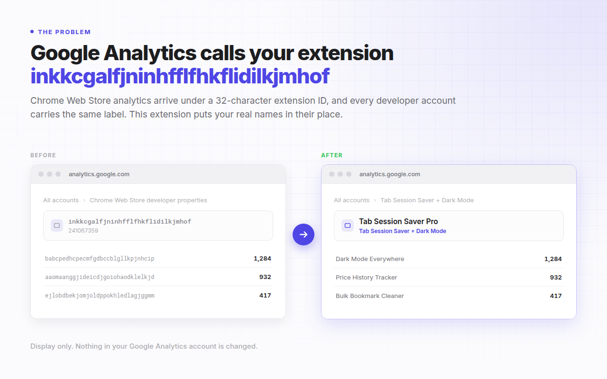
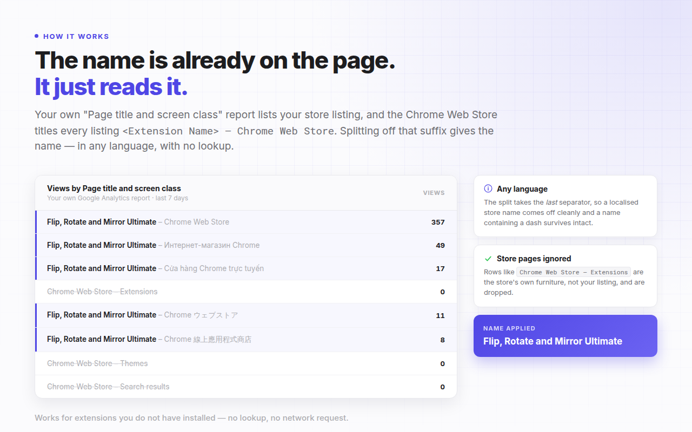
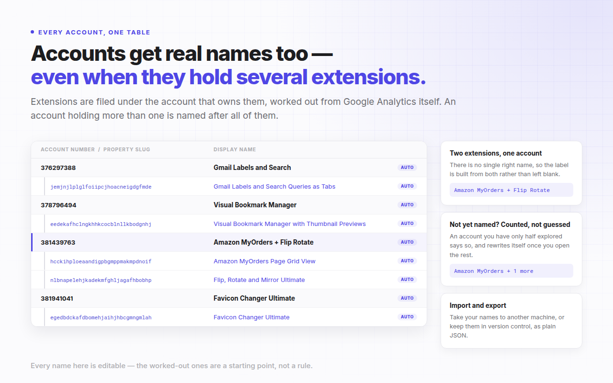
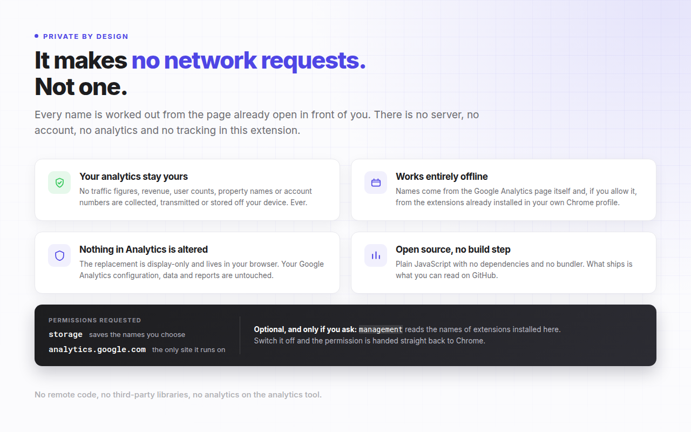

Google Analytics calls your extension a 32-character ID. This calls it by its name.
GA4 Name Changer is a Chrome extension that replaces Chrome Web Store property slugs and Google Analytics account numbers with real extension names, live inside analytics.google.com. It works it out for you, and your analytics never leave your device.
No account, no sign-up, no telemetry. Manifest V3. Chrome 88 and later.
What GA4 Name Changer does
GA4 Name Changer is a free, open-source Chrome extension that substitutes readable names for the Chrome Web Store extension IDs and Google Analytics account numbers displayed on analytics.google.com, so Chrome extension developers can read their own analytics without cross-referencing a list of IDs.
When Google shares Chrome Web Store analytics with a developer, every extension appears as
an opaque 32-character property slug such as inkkcgalfjninhfflfhkflidilkjmhof,
and every developer account carries the identical label "Chrome Web Store developer
properties", separated only by a 9-digit account number. Anyone publishing more than one
extension ends up keeping a mental lookup table just to read a report.
This extension rewrites those identifiers as they are rendered. The substitution is display-only: nothing in your Google Analytics configuration, data or reports is modified, and uninstalling the extension returns Google Analytics to exactly how it looked before.
How it works
The name is already on your screen, so no lookup is needed. Your own "Page title and screen
class" report lists the store listing pages that were viewed, and the Chrome Web Store
titles every listing page <Extension Name> - Chrome Web Store. Splitting
that suffix off the end yields the extension's real name, with no request to anyone.
- Open a propertyVisit any Chrome Web Store property in Google Analytics, exactly as you normally would.
- It names itselfThe name is read from the report already on the page and applied in place, with no save step.
- Rename anythingEvery worked-out name is badged "auto". Type your own over it and press Save. Yours always wins.
Every language
The title is split on the last separator, so a localised store suffix comes off cleanly and an extension name that itself contains a dash survives intact.
Accounts too
Extensions are filed under the account that owns them using Google Analytics' own account tree. An account holding several extensions is named after all of them.
Optional local lookup
Grant Chrome's management permission and any extension installed in your own profile is named from Chrome directly. Off by default, and revocable in one click.
Features
Automatic naming, no setup
Open a property and it names itself. There is no account to create, no key to paste and no list to fill in first.
Name the ones you never opened
One button visits your remaining properties in a single background tab and reads each name from its own report. From a standing start it reads your property list out of Google Analytics first, so it works on a fresh install. It never takes focus, and you can stop it at any point.
Live replacement across SPA navigation
Names are substituted as Google Analytics renders them, including when you navigate between properties without a page reload.
One table for accounts and extensions
The settings page nests each account's extensions beneath it, paired automatically from Google Analytics' own account tree.
A badge that says it is working
The toolbar icon carries the number of names applied to the page you are looking at, so you never have to wonder whether the extension is running.
Toolbar popup
View and edit your names from any tab without leaving the page you are on, and run either naming action from there. It detects a Google Analytics tab elsewhere in the same window.
Cross-device sync
Names you type are kept in chrome.storage.sync and follow your signed-in Chrome profile to your other machines.
Import and export as JSON
Move your names between machines or keep them in version control as a single plain JSON file.
Guided onboarding
A three-slide welcome on first install: what it does, the one thing you need to do, and what the optional permission is and is not used for.
Zero data collection
No analytics, no telemetry and no tracking. Nothing about your Google Analytics data is ever transmitted. Verifiable in the source.
Privacy
Nothing about your Google Analytics data is ever transmitted. There is no account to create, no telemetry and no tracking, and working out a name makes no network request at all: every name is derived from the page already open in front of you.
Your analytics never leave your device. Traffic figures, revenue, user counts, property names and account numbers are never collected, transmitted or stored off your device, not to the developer and not to anyone else. Names you type are stored in your own Chrome profile; names the extension works out are stored on the device only. The one thing the extension ever sends is a support message you type into the feedback form and submit yourself, and it shows you exactly what goes with it beforehand.
| Permission | Why it is needed |
|---|---|
storage | Saves the names you assign. Without it there is nothing to substitute onto the page. |
scripting | Lets a Google Analytics tab you already had open start working without a refresh. It can only reach the site below, which is the only one the extension has permission for. |
analytics.google.com | The only site the extension runs on. It reads and rewrites text nodes there and nowhere else. |
managementoptional | Off by default. When enabled, reads the name of an extension installed in your own profile. Never lists your extensions, never installs, disables or modifies anything, and is handed back to Chrome the moment you switch it off. |
See it in context
Example names and identifiers shown below are fictional.




Install
GA4 Name Changer is free. It is open source and can be loaded from source today; the Chrome Web Store listing is in preparation.
Load from source
git clone https://github.com/PalWorks/Google-Analytics-Name-Changer-for-Chrome-Extensions.git- Open chrome://extensionsThen switch on Developer mode using the toggle in the top right.
- Load unpackedClick Load unpacked and select the cloned repository folder.
- Pin itOpen the puzzle-piece menu in the toolbar and pin the extension, then open Google Analytics.
There is no build step and there are no dependencies. What you load is the source as written.
At a glance
| Name | Google Analytics (GA4) Name Changer for Chrome Extension Developers |
| Category | Developer tool, browser extension |
| Platform | Google Chrome 88 and later, Manifest V3 |
| Works on | analytics.google.com only |
| Price | Free |
| Version | 1.1.0 |
| Network requests | None, except the optional feedback form when you submit it |
| Analytics data transmitted | None, ever |
| Data collected | Only what you type into the feedback form and send |
| Licence | MIT |
| Required permissions | storage and scripting, plus the host permission for analytics.google.com |
| Optional permissions | management, off by default |
| Dependencies | None. Plain JavaScript, no build step, no remote code |
| Source | github.com/PalWorks/Google-Analytics-Name-Changer-for-Chrome-Extensions |
Frequently asked questions
Why does Google Analytics show my Chrome extension as a 32-character ID?
Because that string is your extension's ID, and it is what Google uses to name the Google Analytics property it creates for your Chrome Web Store listing. Google does not substitute the extension's public name, so the property slug stays as the raw ID. Every developer account is additionally given the identical label "Chrome Web Store developer properties", distinguished only by a 9-digit account number.
Can I rename a GA4 property for a Chrome Web Store extension in Google Analytics itself?
No. Chrome Web Store analytics properties are created and managed by Google, and the property name is not editable in the Google Analytics admin the way a property you created yourself would be. That is the gap this extension fills: it changes what is displayed in your browser rather than trying to change the property.
How does GA4 Name Changer know my extension's name without asking a server?
It reads the name off the page you are already looking at. A Chrome Web Store developer property's "Page title and screen class" report lists the store listing pages that were viewed, and the Chrome Web Store titles each of those pages with the extension name followed by the localised store name, separated by " - ". Splitting on the last separator returns the name. Generic store pages such as "Chrome Web Store - Extensions" are discarded, and the remaining candidates are ranked by views.
Does GA4 Name Changer send my analytics data anywhere?
No. It has no analytics, no telemetry and no tracking, and it transmits nothing in the background. Your traffic figures, revenue, user counts, property names and account numbers never leave your device. Working out a name makes no network request at all.
There is exactly one request in the whole extension, and you trigger it: if you fill in the feedback form on the settings page and press send, your message, your email address and the installation details shown to you on that page are sent so your report can be answered. Those details are counts and version numbers only, with no slugs, names, account numbers or URLs. Never use the form and the extension never makes a request.
Does it change anything in my Google Analytics account?
No. The replacement is display-only and happens in your browser as the page renders. Your Google Analytics configuration, your data and your reports are untouched, and anyone else looking at the same account sees the original identifiers. Uninstall the extension and Google Analytics looks exactly as it did before.
Why does it ask for the "management" permission, and is it required?
It is optional and off by default. When you enable it, the extension calls chrome.management.get() with an extension ID taken from your own Google Analytics property list, and reads only that extension's name. It never calls getAll(), so no inventory of your extensions is ever built, and it never installs, uninstalls, enables, disables or modifies anything. Switching the feature off calls chrome.permissions.remove() to hand the permission straight back to Chrome.
It exists because Chrome deliberately blocks extensions from requesting the Chrome Web Store, so an extension's public name cannot simply be fetched. Reading it locally is the only way to resolve an ID your reports have not already named.
What happens to an account that holds several extensions?
It is named after them, not left blank. Two extensions produce a combined label such as "Tab Session Saver + Dark Mode"; three or more produce the first name and a count, "Tab Session Saver Pro + 2 more", so the label still fits the Google Analytics breadcrumb. Extensions the account holds that have not been named yet are counted rather than guessed at, so a half-explored account reads "Tab Session Saver Pro + 1 more" and rewrites itself once you open the rest. Every label is a draft you can type over.
Will my names sync to my other computers?
Names you type are stored in chrome.storage.sync, so Chrome carries them to your other signed-in profiles automatically. Names the extension works out for itself are stored in chrome.storage.local and stay on the device that derived them, because each machine can derive them again for free. You can also export everything as JSON and import it elsewhere.
Does it work if the extension is not installed in my browser?
Yes. The primary naming method reads the name out of your Google Analytics reports, which works for any extension in your developer account whether or not it is installed locally. The optional local lookup through Chrome is only a second source for IDs the reports have not covered.
Is GA4 Name Changer free and open source?
It is free, and the complete source is published on GitHub. There is no build step, no bundler, no dependency and no remote code, so what runs in your browser is exactly what you can read in the repository, along with its architecture notes, design decisions and known limitations.